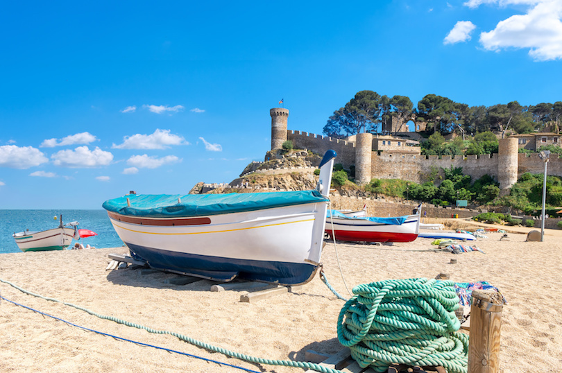
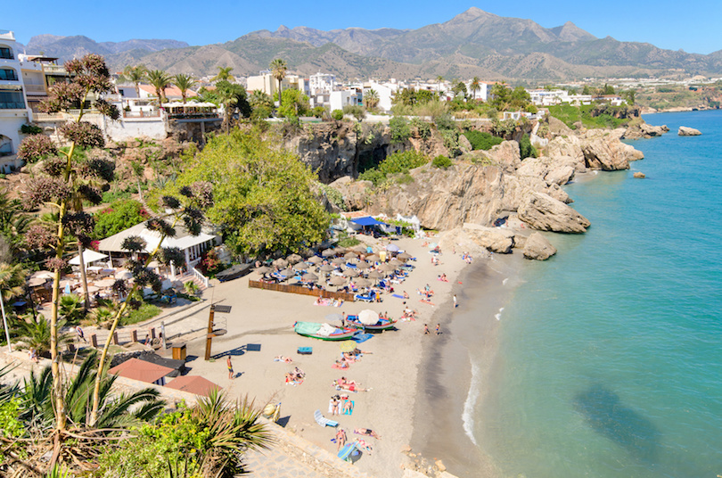
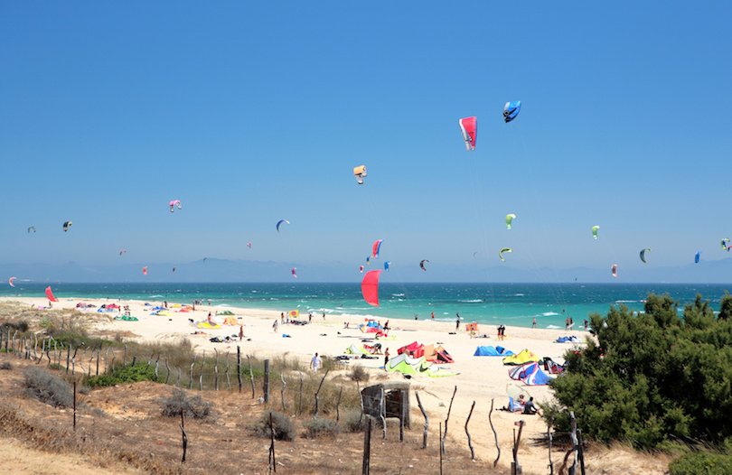
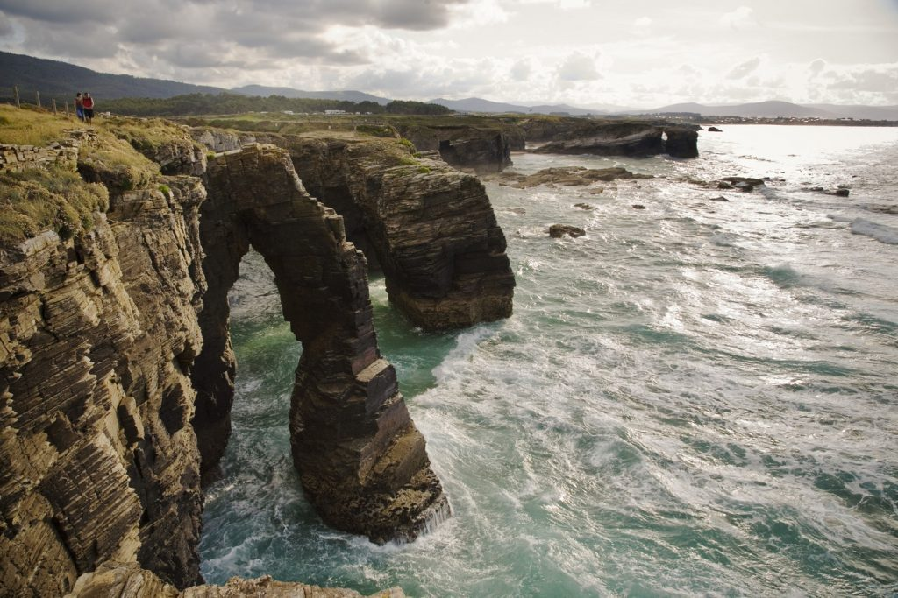

Los mejores destinos de vacaciones de playa en España 2023

Rodeada por el Mar Balear, el Golfo de Vizcaya y el Mar de Alborán, España es una opción obvia para las vacaciones de playa. El país cuenta con kilómetros de impresionantes costas, por no hablar de algunas islas gobernadas por España. Tanto si busca playas solitarias como una cultura vibrante o unas vistas inolvidables, España lo tiene todo. En su próximo viaje, visite tantos de estos destinos de vacaciones en España como le permita su agenda.
1. Nerja

A pocos kilómetros de las bulliciosas playas de Málaga, en la Costa del Sol, se encuentra Nerja, un encantador destino costero situado a los pies de la Sierra Almijara. Antaño un tradicional pueblo de pescadores, Nerja ha crecido hasta convertirse en uno de los principales destinos turísticos de España, pero conserva un auténtico ambiente español. Para disfrutar de unas vistas espectaculares sobre el agua, diríjase al Balcón de Europa de Nerja, donde podrá contemplar el mar en el emplazamiento de un antiguo castillo. Hay 8 km de playas en Nerja, pero la más concurrida es la playa de arena del Salón. El agua es clara y poco profunda, por lo que es adecuada para los visitantes más jóvenes.

En el extremo sur de España, a lo largo de la Costa de la Luz, se encuentra una pequeña ciudad conocida como Tarifa. Las playas son fenomenales por sí mismas, pero lo que hace a Tarifa especialmente especial es que desde su costa se puede ver el Estrecho de Gibraltar hasta África. Si le interesan los deportes de playa, diríjase a la playa de Los Lances. Se trata de un tramo de casi diez kilómetros de arena blanca y dunas, y el viento regular la hace perfecta para practicar kitesurf o windsurf. La playa también alberga una laguna llamada Río Jara, que se llena y se vacía con cada cambio de marea.
3. Playa de las Catedrales

Este tramo de arena de ensueño en la costa noroeste de España está repleto de impresionantes torres, arcos y cámaras de roca de aspecto gótico, esculpidas por las olas del océano Atlántico. Evite las dos horas de marea alta en las que la playa está bajo el agua. Su popularidad es tal que, durante la Semana Santa, julio, agosto, septiembre y algunos fines de semana festivos, se requieren permisos (que se pueden solicitar por Internet) para visitarla.